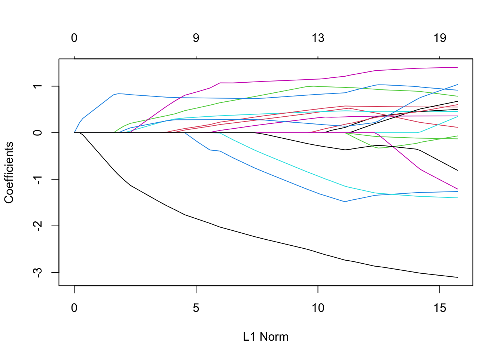
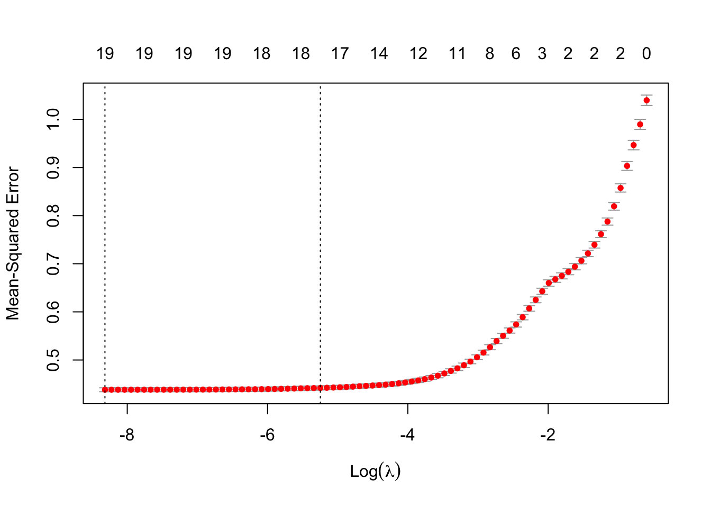
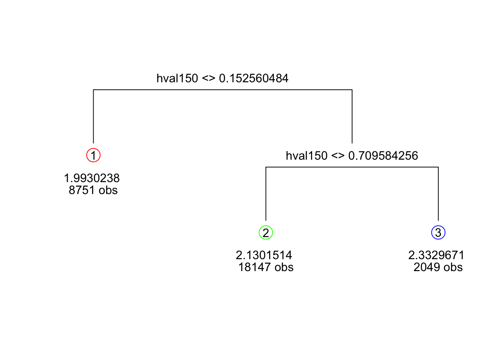
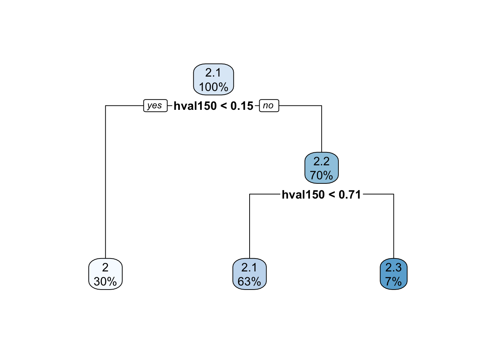
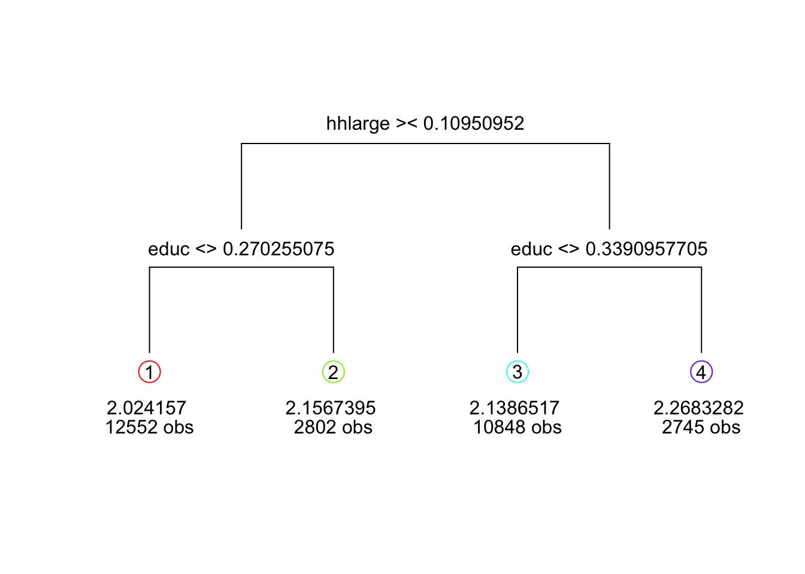
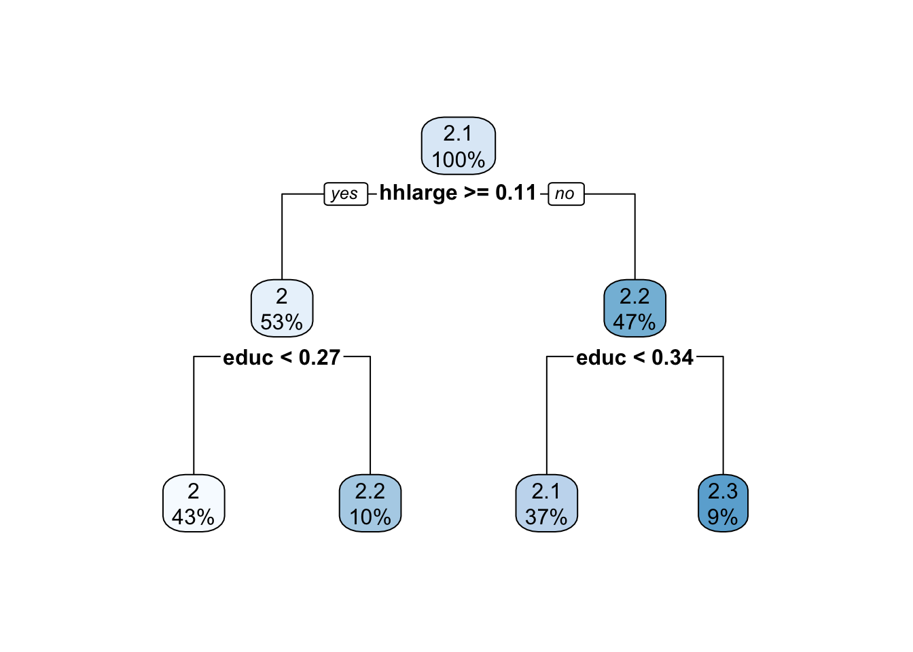

library(dplyr)
library(tidyverse)
library(broom)
library(janitor)
library(knitr)
library(glmnet)HW4
- Take a model that includes brand, feat, log(price), their interactions, lagged price, and demographics, and fit a LASSO using glmnet which is a workhorse R package for LASSO, Ridge and Elastic Nets.
- First remember to install the glmnet package and library to your R session.
- Remember to estimate a LASSO you must pass glmnet a matrix of data for candidate features and a vector as candidate outcomes: As an alternative to defining products in a dataframe, turning that into a matrix then passing that matrix to glmnet, you can cut out the middle man with this. In addition to the variables in the original dataframe, try to create tons of new features that you think could plausibly be predictive of quantity sold. This could include lagged prices, interactions of several features, etc.
setwd("/Users/lesleyxu/Desktop/Past courses/23AU/ECON 487")
oj <- read_csv('oj.csv', show_col_types = FALSE) %>%
clean_names()
demo_cols <- oj %>%
select(age60:hval150) %>%
colnames()
oj_cv <- oj %>%
dplyr::mutate(log_price = log(price)) %>%
dplyr::arrange(week) %>% # sort the data by week
dplyr::group_by(store, brand) %>% # only lag within a store and brand
dplyr::mutate(lag_price = ifelse(lag(week) + 1 == week, lag(log_price), NA)) %>% # calculate lagged prices only if subsequent weeks
dplyr::ungroup() %>%
dplyr::filter(!is.na(lag_price)) %>% # remove observations without a lagged price
dplyr::mutate(dataset_id = sample(
rep(c(1:5), ceiling(n()/5)),
size = n(),
replace = FALSE
))
reg_int <- str_c('logmove ~ log_price*brand*feat + lag_price + ' , str_c(demo_cols, collapse = ' + '))
set.seed(720)
x <- model.matrix(formula(reg_int), oj_cv)
y <- oj_cv$logmove
lasso_v1 <- glmnet(x, y, alpha=1)
#Results
plot(lasso_v1)
# Now ready for cross validation version of the object
cvfit <- cv.glmnet(x, y, alpha=1)
#Results
plot(cvfit)
- Investigate the coefficients of the cross validated LASSO model. Which are the parameters the cross validated LASSO model kicks out of the model? What is the ratio of number of features to number of observations? How might that relate to overfitting from “sampling error”?
summary(head((coef(lasso_v1, s=lasso_v1$lambda.min))))6 x 84 sparse Matrix of class "dgCMatrix", with 378 entries
i j x
1 1 1 9.174759303
2 1 2 9.147502884
3 6 2 0.115177698
4 1 3 9.122667850
5 6 3 0.220123328
6 1 4 9.137104379
7 3 4 -0.044735129
8 6 4 0.307084797
9 1 5 9.198998204
10 3 5 -0.144321532
11 6 5 0.374931775
12 1 6 9.255379285
13 3 6 -0.235043734
14 6 6 0.436754749
15 1 7 9.306751625
16 3 7 -0.317706425
17 6 7 0.493085540
18 1 8 9.353560188
19 3 8 -0.393025590
20 6 8 0.544412059
21 1 9 9.396210408
22 3 9 -0.461653608
23 6 9 0.591178872
24 1 10 9.435071699
25 3 10 -0.524184903
26 6 10 0.633791049
27 1 11 9.470480661
28 3 11 -0.581161089
29 6 11 0.672617679
30 1 12 9.502723191
31 3 12 -0.633050569
32 6 12 0.707999917
33 1 13 9.532122170
34 3 13 -0.680355416
35 6 13 0.740234037
36 1 14 9.558909435
37 3 14 -0.723457844
38 6 14 0.769604565
39 1 15 9.583316993
40 3 15 -0.762731172
41 6 15 0.796365896
42 1 16 9.609172394
43 3 16 -0.806288431
44 5 16 0.007755749
45 6 16 0.820254098
46 1 17 9.660753042
47 3 17 -0.905156519
48 5 17 0.072527057
49 6 17 0.838070759
50 1 18 9.716015098
51 3 18 -1.009895418
52 5 18 0.142116254
53 6 18 0.831914695
54 1 19 9.757471879
55 3 19 -1.128310780
56 5 19 0.200639750
57 6 19 0.817767584
58 1 20 9.761402938
59 3 20 -1.252293581
60 5 20 0.247525869
61 6 20 0.802442665
62 1 21 9.765246733
63 3 21 -1.365854905
64 5 21 0.290376393
65 6 21 0.788229476
66 1 22 9.768678890
67 3 22 -1.468996319
68 5 22 0.329526745
69 6 22 0.775403236
70 1 23 9.769847549
71 3 23 -1.563958577
72 5 23 0.365096470
73 6 23 0.763408275
74 1 24 9.767174154
75 3 24 -1.656570317
76 4 24 0.011869145
77 5 24 0.407502237
78 6 24 0.754107276
79 1 25 9.769202175
80 3 25 -1.761055429
81 4 25 0.058491345
82 5 25 0.474183941
83 6 25 0.750982144
84 1 26 9.799092382
85 3 26 -1.856822262
86 4 26 0.100702462
87 5 26 0.535015873
88 6 26 0.747825311
89 1 27 9.820573000
90 3 27 -1.944877556
91 4 27 0.139777382
92 5 27 0.591494244
93 6 27 0.744862189
94 1 28 9.808471667
95 3 28 -2.026126793
96 4 28 0.176024383
97 5 28 0.644608766
98 6 28 0.741954486
99 1 29 9.880396201
100 3 29 -2.100760917
101 4 29 0.209139412
102 5 29 0.692933065
103 6 29 0.739244934
104 1 30 9.936463007
105 3 30 -2.168743101
106 4 30 0.239296578
107 5 30 0.736949463
108 6 30 0.736774649
109 1 31 9.987131439
110 3 31 -2.230691872
111 4 31 0.266778297
112 5 31 0.777060569
113 6 31 0.734523302
114 1 32 10.029740882
115 3 32 -2.287180562
116 4 32 0.294522222
117 5 32 0.819152899
118 6 32 0.743990768
119 1 33 10.067770364
120 3 33 -2.337800155
121 4 33 0.321575491
122 5 33 0.860466738
123 6 33 0.759664970
124 1 34 10.102016108
125 3 34 -2.384441995
126 4 34 0.346236447
127 5 34 0.898103329
128 6 34 0.773591280
129 1 35 10.133338116
130 3 35 -2.426495676
131 4 35 0.368447786
132 5 35 0.932181957
133 6 35 0.786098623
134 1 36 10.161748264
135 3 36 -2.465246888
136 4 36 0.388934326
137 5 36 0.963439509
138 6 36 0.797663159
139 1 37 10.187616127
140 3 37 -2.500562802
141 4 37 0.407605593
142 5 37 0.991923278
143 6 37 0.808205689
144 1 38 10.214686732
145 3 38 -2.542346674
146 4 38 0.427782628
147 5 38 0.999349626
148 6 38 0.817783928
149 1 39 10.242571911
150 3 39 -2.582675844
151 4 39 0.446537338
152 5 39 0.993164864
153 6 39 0.826037403
154 1 40 10.264838948
155 3 40 -2.619284235
156 4 40 0.463467197
157 5 40 0.987618861
158 6 40 0.833510737
159 1 41 10.283030151
160 3 41 -2.652220915
161 4 41 0.478807056
162 5 41 0.983536148
163 6 41 0.840353811
164 1 42 10.300810336
165 3 42 -2.682441123
166 4 42 0.492824229
167 5 42 0.979284833
168 6 42 0.846571406
169 1 43 10.316566086
170 3 43 -2.709687233
171 4 43 0.505417786
172 5 43 0.976089298
173 6 43 0.852192989
174 1 44 10.332950596
175 3 44 -2.735096151
176 4 44 0.517252420
177 5 44 0.971825445
178 6 44 0.857598943
179 1 45 10.460674838
180 3 45 -2.747597987
181 4 45 0.526085190
182 5 45 0.968629319
183 6 45 0.880667110
184 1 46 10.582391987
185 3 46 -2.764070914
186 4 46 0.511449586
187 5 46 0.967238764
188 6 46 0.905713847
189 1 47 10.691634694
190 3 47 -2.781940591
191 4 47 0.495067775
192 5 47 0.961029904
193 6 47 0.927597837
194 1 48 10.791630412
195 3 48 -2.798857697
196 4 48 0.481058396
197 5 48 0.955384932
198 6 48 0.946514364
199 1 49 10.882714353
200 3 49 -2.814176910
201 4 49 0.468605438
202 5 49 0.950903837
203 6 49 0.963565384
204 1 50 10.965723000
205 3 50 -2.828211974
206 4 50 0.457342109
207 5 50 0.946540795
208 6 50 0.979027089
209 1 51 11.041396610
210 3 51 -2.841113608
211 4 51 0.446696308
212 5 51 0.942174406
213 6 51 0.993259080
214 1 52 11.110124990
215 3 52 -2.852691111
216 4 52 0.437482833
217 5 52 0.938956218
218 6 52 1.006064098
219 1 53 11.172878107
220 3 53 -2.863310618
221 4 53 0.428656188
222 5 53 0.935478471
223 6 53 1.017845638
224 1 54 11.228817264
225 3 54 -2.873022073
226 4 54 0.413586467
227 5 54 0.928909430
228 6 54 1.030060683
229 1 55 11.282358629
230 3 55 -2.889457887
231 4 55 0.387473218
232 5 55 0.920949463
233 6 55 1.028561535
234 1 56 11.332830407
235 3 56 -2.906791458
236 4 56 0.364266707
237 5 56 0.916421687
238 6 56 1.023000678
239 1 57 11.378733901
240 3 57 -2.922243048
241 4 57 0.343573405
242 5 57 0.912616194
243 6 57 1.018458517
244 1 58 11.420690753
245 3 58 -2.936742785
246 4 58 0.324199409
247 5 58 0.908922651
248 6 58 1.013870276
249 1 59 11.458922898
250 3 59 -2.949928408
251 4 59 0.306714741
252 5 59 0.905566455
253 6 59 1.009742823
254 1 60 11.493822218
255 3 60 -2.962112017
256 4 60 0.290523720
257 5 60 0.902401453
258 6 60 1.005797453
259 1 61 11.525663253
260 3 61 -2.973314933
261 4 61 0.275665820
262 5 61 0.899463745
263 6 61 1.002093462
264 1 62 11.554688438
265 3 62 -2.983560347
266 4 62 0.262108282
267 5 62 0.896763286
268 6 62 0.998681764
269 1 63 11.581008688
270 3 63 -2.992628203
271 4 63 0.250245457
272 5 63 0.894451906
273 6 63 0.995872207
274 1 64 11.605090849
275 3 64 -3.001120107
276 4 64 0.238947913
277 5 64 0.892197741
278 6 64 0.993054050
279 1 65 11.630185423
280 3 65 -3.015063003
281 4 65 0.221157161
282 5 65 0.885085468
283 6 65 0.981339457
284 1 66 11.652014106
285 3 66 -3.025025095
286 4 66 0.209630799
287 5 66 0.874905502
288 6 66 0.973398299
289 1 67 11.671834178
290 3 67 -3.034075675
291 4 67 0.199009378
292 5 67 0.864908843
293 6 67 0.966351483
294 1 68 11.689657553
295 3 68 -3.041809682
296 4 68 0.190038924
297 5 68 0.856235207
298 6 68 0.960684194
299 1 69 11.705937507
300 3 69 -3.048978607
301 4 69 0.181634927
302 5 69 0.848066287
303 6 69 0.955402676
304 1 70 11.720862355
305 3 70 -3.055711045
306 4 70 0.173722848
307 5 70 0.840368823
308 6 70 0.950318802
309 1 71 11.734380441
310 3 71 -3.061666060
311 4 71 0.166811361
312 5 71 0.833625567
313 6 71 0.945912840
314 1 72 11.746704881
315 3 72 -3.067122382
316 4 72 0.160442958
317 5 72 0.827400174
318 6 72 0.941885670
319 1 73 11.757985707
320 3 73 -3.072198849
321 4 73 0.154493731
322 5 73 0.821605127
323 6 73 0.938052238
324 1 74 11.768250025
325 3 74 -3.076819057
326 4 74 0.149105005
327 5 74 0.816333824
328 6 74 0.934600001
329 1 75 11.777461120
330 3 75 -3.080765332
331 4 75 0.144602164
332 5 75 0.811946617
333 6 75 0.931751014
334 1 76 11.786006081
335 3 76 -3.084608664
336 4 76 0.140058914
337 5 76 0.807529211
338 6 76 0.928850329
339 1 77 11.793722105
340 3 77 -3.088060625
341 4 77 0.136045614
342 5 77 0.803612428
343 6 77 0.926292193
344 1 78 11.800692276
345 3 78 -3.091115018
346 4 78 0.132530450
347 5 78 0.800171990
348 6 78 0.924081364
349 1 79 11.807191489
350 3 79 -3.094084483
351 4 79 0.129006823
352 5 79 0.796723231
353 6 79 0.921830445
354 1 80 11.813065497
355 3 80 -3.096776322
356 4 80 0.125867472
357 5 80 0.793679977
358 6 80 0.919753917
359 1 81 11.818301272
360 3 81 -3.099107799
361 4 81 0.123211273
362 5 81 0.791098410
363 6 81 0.918028806
364 1 82 11.823236358
365 3 82 -3.101371299
366 4 82 0.120537918
367 5 82 0.788492000
368 6 82 0.916289821
369 1 83 11.827531425
370 3 83 -3.103294015
371 4 83 0.118351386
372 5 83 0.786356356
373 6 83 0.914880075
374 1 84 11.831626995
375 3 84 -3.105160983
376 4 84 0.116150207
377 5 84 0.784200738
378 6 84 0.913459629log(cvfit$lambda.min)[1] -8.317741coef(cvfit, s = "lambda.min")21 x 1 sparse Matrix of class "dgCMatrix"
s1
(Intercept) 11.83162700
(Intercept) .
log_price -3.10516098
brandminute.maid 0.11615021
brandtropicana 0.78420074
feat 0.91345963
lag_price 0.45750163
age60 1.40535449
educ 0.50130998
ethnic 0.55180588
income -0.13127520
hhlarge -1.26167163
workwom -1.39771457
hval150 0.36073584
log_price:brandminute.maid 0.67432566
log_price:brandtropicana 0.60278678
log_price:feat -0.06914071
brandminute.maid:feat 1.03415531
brandtropicana:feat 0.34555577
log_price:brandminute.maid:feat -1.20760533
log_price:brandtropicana:feat -0.80701294- Can you look that the glmnet objects and figure out what the out of sample (e.g., test set) average MSE was with the cross validated LASSO model relative to the model in 1.c?
cvfit
Call: cv.glmnet(x = x, y = y, alpha = 1)
Measure: Mean-Squared Error
Lambda Index Measure SE Nonzero
min 0.000244 84 0.4381 0.004054 19
1se 0.005260 51 0.4419 0.004231 17oj_reg_demo <- oj %>%
dplyr::mutate(id_val = row_number(),
log_price = log(price))
df_train <- oj_reg_demo %>%
slice_sample(prop = .8)
df_test <- oj_reg_demo %>%
anti_join(df_train,
by = 'id_val')
reg_str <- str_c('logmove ~ log_price*feat*brand + ', str_c(demo_cols, collapse = ' + '))
reg_form <- formula(reg_str)
demo_reg_train <- lm(reg_form, data = df_train)
reg_train <- lm(logmove ~ log_price*feat*brand, data = df_train)
mse <- function(model, test_set){
return(round(mean((test_set$logmove - predict(model, newdata=test_set))^2), 2))
}
mse(demo_reg_train, df_test)[1] 0.43- The average MSE with the cross validated LASSO model is 0.4419, and the MSE for test set with demographic variables included from last problem is 0.45. Therefore, the LASSO model did a better job since it has a lower MSE.
What is the advantage of using LASSO for choosing model complexity as opposed to using your intuition as an economist?
In what part of this process did you use your intuition as an economist? (HINT: what’s in the X matrix?)
- By using LASSO, I am able to reduce as much coefficient to zero as possible, and the left non-zero coefficient will be the more significant variables in my model. LASSO shrinks the coefficients of less important variables to zero while keep the important variables. And because the model selected according to LASSO will be less complex, it will help avoid overfitting at the same time.
- Now estimate the model with only the variable selected with the LASSO procedure but with OLS to avoid attenuation bias in the coefficients (similar to this paper).
Let’s return to the orange juice assignment and get very precise about how to interpret coefficients. What is the predicted elasticity in the following cases?
For Dominicks when the lagged price is $1 (NOTE: did you interact lagged price with current period price?) If not, does lagged price impact the elasticity this period or log move this period.
coefficients <- coef(cvfit, s = cvfit$lambda.1se)
# extract the variables with nonzero coefficients
rownames(coef(cvfit, s = 'lambda.1se'))[coef(cvfit, s = 'lambda.1se')[,1]!= 0] %>%
kable()| x |
|---|
| (Intercept) |
| log_price |
| brandminute.maid |
| brandtropicana |
| feat |
| lag_price |
| age60 |
| educ |
| ethnic |
| income |
| hhlarge |
| workwom |
| hval150 |
| log_price:brandminute.maid |
| log_price:brandtropicana |
| log_price:feat |
| brandminute.maid:feat |
| log_price:brandtropicana:feat |
oj_cv_price <- oj %>%
dplyr::mutate(log_price = log(price)) %>%
dplyr::arrange(week) %>% # sort the data by week
dplyr::group_by(store, brand) %>% # only lag within a store and brand
dplyr::mutate(lag_price = ifelse(lag(week) + 1 == week, lag(price), NA)) %>% # calculate lagged prices only if subsequent weeks
dplyr::ungroup() %>%
dplyr::filter(!is.na(lag_price)) %>% # remove observations without a lagged price
dplyr::mutate(dataset_id = sample(
rep(c(1:5), ceiling(n()/5)),
size = n(),
replace = FALSE
))
mod2 <- formula('logmove ~ log_price + + log(lag_price) + log_price*log(lag_price) + brand + brand*log_price + brand*feat + brand*feat*log_price + income + educ + hhlarge + workwom + age60 + feat + age60*income + age60*log_price + educ*log_price + hhlarge*log_price + workwom*log_price + hhlarge*workwom + educ*workwom + income*workwom + income*hhlarge')
dom_lag_1 <- oj_cv_price %>%
filter(brand == 'dominicks') %>%
filter(lag_price == 1)- For Tropicana
trop_pred <- oj_cv_price %>%
filter(brand == 'tropicana')- For Tropicana when its featured
trop_feat <- oj_cv_price %>%
filter(brand == 'tropicana') %>%
filter(feat == 1)- What is the 95% confidence intervals for Tropicana
reg2 <- lm(mod2, oj_cv_price)
ci_trop <- confint(reg2, "brandtropicana", level=0.95, oj_cv_price)
ci_trop %>%
kable()| 2.5 % | 97.5 % | |
|---|---|---|
| brandtropicana | 0.3093633 | 0.5455199 |
Which product has the most elastic demand?
Should that product have the highest markup over costs or lowest markup over costs? Why?
- Go back to using logmove and log(price).
- Estimate a 3x3 matrix own price and cross price elasticities for Dominicks, Minute Maid, and Tropicana using only the current week’s prices. Be sure to estimate separate models for sales of Dominicks, MM and Tropicana (e.g., you’ll run three separate regressions with the same RHS variables but different LHS variables). It doesn’t need to be overly complicated, but make sure there is an interpretable elasticity estimate. NOTE: This will require three different regressions & add in socio demographic controls for each store.
wide_data <- oj_reg_demo %>%
select(store, week, brand, log_price) %>%
pivot_wider(
id_cols = c(store,week),
names_from = brand,
values_from=log_price
)
cross_price_data <- oj_reg_demo %>%
select(store, week, logmove, brand) %>%
left_join(wide_data,
by = c('store', 'week'))
# split the dataset according to brand
oj_dominicks <- oj_reg_demo %>%
dplyr::filter(brand == 'dominicks')
oj_tropicana <- oj_reg_demo %>%
dplyr::filter(brand == 'tropicana')
oj_minutemaid <- oj_reg_demo %>%
dplyr::filter(brand == 'minute.maid')# rejoin the logmove and log price
oj_dominicks$logprice_tropicana <- oj_tropicana$log_price
oj_dominicks$logmove_tropicana <- oj_tropicana$logmove
oj_dominicks$logprice_minutemaid <- oj_minutemaid$log_price
oj_dominicks$logmove_minutemaid <- oj_minutemaid$logmove
demo_cols_cross <- oj %>%
select(age60:cpwvol5) %>%
colnames()
reg_domi <- str_c('logmove ~ log_price + logprice_minutemaid + logprice_tropicana + ' , str_c(demo_cols_cross, collapse = ' + '))
model.dominicks <- lm(formula(reg_domi),oj_dominicks)
reg_trop <- str_c('logmove_tropicana ~ log_price + logprice_minutemaid + logprice_tropicana + ' , str_c(demo_cols_cross, collapse = ' + '))
model.tropicana <- lm(formula(reg_trop),oj_dominicks)
reg_minu <- str_c('logmove_minutemaid ~ log_price + logprice_minutemaid + logprice_tropicana + ' , str_c(demo_cols_cross, collapse = ' + '))
model.minutemaid <- lm(formula(reg_minu),oj_dominicks)
epsilon_d <- c(summary(model.dominicks)$coefficients[2:4])
epsilon_t <- c(summary(model.tropicana)$coefficients[2:4])
epsilon_m <- c(summary(model.minutemaid)$coefficients[2:4])
matrix_cross1 <- rbind(epsilon_d, epsilon_t, epsilon_m)
colnames(matrix_cross1) <- c('dominicks', 'minutemaid', 'tropicana')
matrix_cross1 %>%
kable()| dominicks | minutemaid | tropicana | |
|---|---|---|---|
| epsilon_d | -3.5418257 | 1.2230131 | 0.0404492 |
| epsilon_t | 0.1914969 | 0.3239453 | -2.9725856 |
| epsilon_m | 0.8579440 | -3.9284141 | 1.1143010 |
- Do the same but add in interactions for whether or not each brand is featured.
reg_domi_feat <- str_c('logmove ~ log_price + logprice_minutemaid + logprice_tropicana + feat + ' , str_c(demo_cols_cross, collapse = ' + '))
model.dominicks.feat <- lm(formula(reg_domi_feat),oj_dominicks)
reg_trop_feat <- str_c('logmove_tropicana ~ log_price + logprice_minutemaid + logprice_tropicana + feat + ' , str_c(demo_cols_cross, collapse = ' + '))
model.tropicana.feat <- lm(formula(reg_trop_feat),oj_dominicks)
reg_minu_feat <- str_c('logmove_minutemaid ~ log_price + logprice_minutemaid + logprice_tropicana + feat + ' , str_c(demo_cols_cross, collapse = ' + '))
model.minutemaid.feat <- lm(formula(reg_minu_feat),oj_dominicks)
epsilon_d_feat <- c(summary(model.dominicks.feat)$coefficients[2:4])
epsilon_t_feat <- c(summary(model.tropicana.feat)$coefficients[2:4])
epsilon_m_feat <- c(summary(model.minutemaid.feat)$coefficients[2:4])
matrix_cross2 <- rbind(epsilon_d_feat, epsilon_t_feat, epsilon_m_feat)
colnames(matrix_cross2) <- c('dominicks', 'minutemaid', 'tropicana')
matrix_cross2 %>%
kable()| dominicks | minutemaid | tropicana | |
|---|---|---|---|
| epsilon_d_feat | -3.0566741 | 1.0434204 | 0.0008861 |
| epsilon_t_feat | 0.1664614 | 0.3332129 | -2.9705440 |
| epsilon_m_feat | 0.7724796 | -3.8967770 | 1.1212705 |
- How do the estimates change?
- Comparing to the previous model without feature variable, the diagonal coefficients are decreased in magnitude (smaller absolute value), meaning when take feature into account, indicating a less responsiveness to change in price.
- What product’s sales suffer the most when Minute Maid is both featured and lowers its price?
- Which two products are the most competitive with each other?
- Dominicks and minute.maid are the most competitive with each other because the cross price elasticity are positive for those two brands, meaning that the increase in price of dominicks will lead to increase in price of minute.maid. They are substitutes, therefore the most competitive with each other.
- How did you infer that looking at the cross price elasticity?
- What do you expect that to mean about the correlation of the prices of those two products? Would they be more correlated or less correlated than the price of other pairs of products?
- Create a sales weighted price for orange juice by store.
- You’ll first need to create actual sales (call it “Q”) instead of log sales for the weighting and put it into your dataframe.
oj_with_Q <- oj %>%
mutate(Q = exp(logmove))- You can use the weighted.mean() function for each store-week combination in the dplyr library.
library(plyr)
oj_weighted <- ddply(oj_with_Q, c('store','week'), function(x) c(weighted_mean = weighted.mean(x$price,x$Q)))
oj_with_Q <- left_join(oj_with_Q, oj_weighted, by=c('store', 'week'))- Now use oj$weighted_price as the LHS variable in a regression tree to predict differences in sales weight prices with store demographics as RHS variables. Note that you’ll only need to do for a single brand since weighted price and sociodemographic variables are identical across brands within a store.
- There are a couple libraries you’ll need which you’ll see in the lecture notes (rpart, maptree, etc.)
- There are two main pieces of code:
dataToPass<-oj[,c("weighted_mean","AGE60","EDUC","ETHNIC","INCOME","HHLARGE","WORKWOM","HVAL150","SSTRDIST","SSTRVOL","CPDIST5","CPWVOL5")]The above creates a dataframe from the existing one (with weighted mean merged back in) which will then be passed into rpart (tree partitioning algorithm).
fit<-rpart(as.formula(weighted_mean ~ .),data=dataToPass,method="anova",cp=0.007)This is the code which will fit the tree. - Play around with a couple different complexity parameters to get a feel for the data
draw.tree(fit)#This draws the tree - Choose three different leaves to group stores into based upon what explains sales weighted price.
- Assign each store to one of these leaves (we used this code previously).
library(rpart)
library(rpart.plot)
library(maptree)
dataToPass <- oj_with_Q[,c("weighted_mean","age60","educ","ethnic","income","hhlarge","workwom","hval150","sstrdist","sstrvol","cpdist5","cpwvol5")]
treefit <- rpart(as.formula(weighted_mean ~ .),data=dataToPass,method="anova",cp=0.007)
draw.tree(treefit)
# alternative plot
rpart.plot(treefit)
dataToPass$leaf = treefit$where
# extract the variables regarding hhlarge and educ from last problem set
treefit2 <- rpart(as.formula(weighted_mean ~ educ + hhlarge),data=dataToPass,method="anova",cp=0.007)
draw.tree(treefit2)
rpart.plot(treefit2)
- Estimate the own price elasticities for each one of the store buckets/leaves using the preferred specification:
- Now estimate cross price elasticities jointly with own price elasticities. This means you must create a dataframe which has the prices of all types of OJ at the store. (e.g., you should be able to use the Trop_Cross code you’ve used previously.
- You’ll also have to run 3 separate regressions for each leaf for a total of nine regressions.
reg_int <- glm(logmove~log_price*feat + logprice_tropicana*feat + logprice_minutemaid*feat, data=oj_dominicks)
# treefit3 <- rpart(as.formula(logmove~log_price*feat + logprice_tropicana*feat + logprice_minutemaid*feat),data=oj_dominicks,method="anova",cp=0.007)
# draw.tree(treefit3)
# rpart.plot(treefit3)In this example, we are investigating the own and cross price elasticities for Dominick’s brand (D) within leaf L.
Save the coefficients for each leaf in a 3x3 matrix. The diagonals will be own price elasticities and the off diagonals will be cross price elasticities.
There will be a unique 3x3 matrix for each leaf.
The 3x3 matrices WON’T be upper triangular because we’re estimating three unique regressions for each leaf.
Comment on any differences between own and cross price elasticities by leaf.
# split the dataset according to the leave
oj_leaves <- split(dataToPass, dataToPass$leaf)
oj_leaf_2 <- data.frame(oj_leaves[[1]])
oj_leaf_4 <- data.frame(oj_leaves[[2]])
oj_leaf_5 <- data.frame(oj_leaves[[3]])
oj_leaf_2 <- left_join(oj_leaf_2, oj_with_Q, by=c("age60", "educ", "ethnic", "income", "hhlarge", "workwom", "hval150", "sstrdist", "sstrvol", "cpdist5", "cpwvol5", "weighted_mean"))
reg_int_2 <- glm(logmove ~ log(price) * brand * feat, data = oj_leaf_2)
oj_leaf_4 <- left_join(oj_leaf_4, oj_with_Q, by=c("age60", "educ", "ethnic", "income", "hhlarge", "workwom", "hval150", "sstrdist", "sstrvol", "cpdist5", "cpwvol5", "weighted_mean"))
reg_int_4 <- glm(logmove ~ log(price) * brand * feat, data = oj_leaf_4)
oj_leaf_5 <- left_join(oj_leaf_5, oj_with_Q, by=c("age60", "educ", "ethnic", "income", "hhlarge", "workwom", "hval150", "sstrdist", "sstrvol", "cpdist5", "cpwvol5", "weighted_mean"))
reg_int_5 <- glm(logmove ~ log(price) * brand * feat, data = oj_leaf_5)
epsilon_2 <- c(summary(reg_int_2)$coefficients[2:4])
epsilon_4 <- c(summary(reg_int_4)$coefficients[2:4])
epsilon_5 <- c(summary(reg_int_5)$coefficients[2:4])
epsilon_byleaf <- rbind(epsilon_2, epsilon_4, epsilon_5)
epsilon_byleaf %>%
kable()| epsilon_2 | -2.834347 | 0.0709283 | 0.8088127 |
| epsilon_4 | -2.611296 | 0.1393551 | 0.9041316 |
| epsilon_5 | -3.041151 | 0.4594412 | 1.5576656 |
oj_with_leaves <- left_join(dataToPass, oj, by=c("age60", "educ", "ethnic", "income", "hhlarge", "workwom", "hval150", "sstrdist", "sstrvol", "cpdist5", "cpwvol5"))- Now let’s use the elasticities to think about pricing differentials.
a.In the leaf with the highest own-price elasticities, what should the markups be relative to the other leafs?
b.How do cross-price elasticities vary with the highest versus lowest own price elasticity leafs?
What does this imply about differences in markups within high versus low elasticity stores across brands? \[\text{markup} = \frac{\text{margin}}{\text{cost}}\]
Can you say anything about what this means for the timing of sales? Should they occur at the same or different times across stores?
- It depends on the price sensitivity of target consumers. If they occur at the same time, the consumers might not have the incentive to purchase product from particular brand.